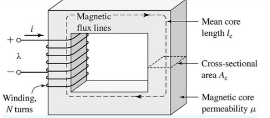
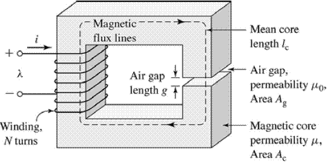
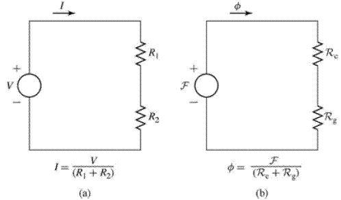
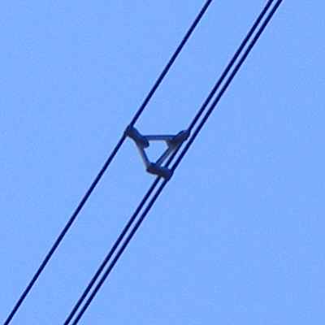

class: center, middle # Roketsan Training - Session I # Magnetic Circuits and Magnetic Materials ## Ozan Keysan [keysan.me](http://keysan.me) Office: C-113 <span class="meta">•</span> Tel: 210 7586 --- # Electric Circuits vs. Magnetic Circuits ## Electric Materials -- ## Conductors: -- Copper, Aluminium, Iron... -- ## Insulators: Plastic, Air... --- # Electric Circuits vs. Magnetic Circuits ## What is the best conductor? -- - ## **Copper:** \\(1.68 \; 10^{-8} \; \Omega.m \\) -- - ## **Aluminium:** \\(2.82\; 10^{-8} \; \Omega.m \\) -- - ## **Silver:** \\(1.59 \; 10^{-8} \; \Omega.m \\) -- - ## **Gold:** \\(2.44 \; 10^{-8} \; \Omega.m \\) --- ### Why some connectors are gold plated? -- <img src="https://productimages.hepsiburada.net/s/194/550/110000162422826.jpg" alt="Drawing" style="width: 300px;"/> ### Gold Plated High Speed HDMI cable [>30.000 TL](https://www.hepsiburada.com/audioquest-cherry-cola-active-optical-hdmi-kablo-20m-p-HBV00000SX5L0): SCAM! AudioQuest's sophisticated Noise-Dissipation System combines RF noise-absorbing carbon and directionality-controlled silver-plated conductors to minimize the distortion caused by RF interference, ensuring a fully immersive entertainment experience. --- # Electric vs. Magnetic Materials -- ### In Electric Circuits we have Conductors ### In Magnetic Circuits we have Ferromagnets -- ## (e.g. Iron, Cobalt) ## Large permeability ( `\(\mu_r >> 1\)`) <img src="https://c1.staticflickr.com/3/2716/4468925382_6c3ceecbfe.jpg" alt="Drawing" style="width: 450px;"/> --- # Electric vs. Magnetic Materials ## Insulators in electric circuits ## = Non-magnetic materials in magnetic circuits -- ### (e.g. Plastic, Copper, Aluminium ) --- # Non-magnetic Materials -- ## Paramagnetic ### ( `\(\mu_r \gtrsim 1\)`) (very slightly attracted) ### E.g.:Aluminium -- ## Diamagnetic ### ( `\(\mu_r \lesssim 1\)`) (very slightly repulsed) ### E.g.: Copper, Water, [Frogs](https://www.youtube.com/watch?v=KlJsVqc0ywM), [Diamagnetism of Water](https://www.youtube.com/watch?v=gJeqriqRYYE) --- # Electric Circuits ## Analogy to Hydraulic System ### - Voltage --> Pressure ### - Electric Current --> Water Current ### - Hydraulic Resistance --> Resistance --- # Magnetic Circuits ## Magnetic circuits are analogous to electric circuits: <img src="magnetic_electric_circuit.png" alt="Drawing" style="width: 800px;"/> --- # Conducting Materials: -- # Electric Circuits: -- ## - Copper ## - Aluminium -- # Magnetic Circuits: -- ## - Iron ## - Electrical Steel --- # Insulating Materials: -- ## Electric Circuits: -- ## - Air, Plastics -- ## Magnetic Circuits: -- ## - Air, Copper, Aluminium --- # Magnetic vs Electric Circuit -- ## Conductivity of Copper vs Air? -- ### Copper is \\(10^{22}\\) times more conductive than air. -- ### Copper is \\(10^{7}\\) times more conductive than sea water. --- # Magnetic vs Electric Circuit -- ## How about Magnetic Circuits? -- ## Iron is JUST 3000 times more "permeable" than air ## Therefore, air is a circuit element in magnetic circuits! --- # Magnetic Circuits ## Flux (Wb) -- ## Flux Density (Wb/m\\(^2\\) or T) -- ## Magneto-motive Force (MMF), (A.turns) --- # Magnetic Circuits and Maxwell Equations: #### $$\textrm{Gauss' Law}\quad \nabla \cdot \vec{E} = \frac{\rho}{\varepsilon_0} $$ #### $$\textrm{Gauss' Law ($\vec{B}$ Fields)} \quad \nabla \cdot \vec{B} = 0 $$ #### $$\textrm{Faraday's Law} \quad \nabla \times\quad \vec{E} = - \frac{\partial \vec{B}}{\partial t}$$ #### $$\textrm{Ampere's Law} \quad \nabla \times \vec{B} = \mu_0 \vec{J} + \mu_0\varepsilon_0\frac{\partial \vec{E}}{\partial t}$$ ####For curious students: #### - [Maxwell Equations](http://www.maxwells-equations.com/) #### - [Who's afraid of Maxwell equations?](https://www.majr.com/wp-content/uploads/2018/04/Elya-Joffe-Whos-Afraid-of-Maxwells-Equations-Pittsburgh-EMC-Chapter.compressed.pdf) #### - [An Intuitive Guide to Maxwell’s Equations](https://photonlines.substack.com/p/an-intuitive-guide-to-maxwells-equations) --- # Ampere's Law ### \\(\oint_C {\vec{H}.d\vec{\ell}}\\)= -- ### \\( \iint_{closed S} \vec{J}dA = \sum I_n \\) #### Magnetic field intensity(H) is independent of the material properties!  --- # Ampere's Law ## Magneto-Motive Force (\\(\mathcal{F}\\)) ## \\( \mathcal{F} = NI \\) -- ## Electric Circuits: \\(\quad \quad V=IR\\) ## Magnetic Circuits: \\( \quad \quad \mathcal{F} = \Phi \mathcal{R} \\) --- # Maxwell Equations: ### $$\textrm{Gauss' Law ($\vec{E}$ Fields) }\quad \nabla \cdot \vec{E} = \frac{\rho}{\varepsilon_0} $$ -- ### $$\textrm{Gauss' Law ($\vec{B}$ Fields)} \quad \nabla \cdot \vec{B} = 0 $$ -- ## Need a reminder for vector calculus? ## [Curl](http://betterexplained.com/articles/vector-calculus-understanding-circulation-and-curl/), [Divergence](http://betterexplained.com/articles/divergence/), [Cross Product](http://betterexplained.com/articles/vector-calculus-understanding-the-dot-product/) --- ## Electric Field can diverge ## (i.e. can get away from a charged particle) <img src="https://i.sstatic.net/VQjdw.png" alt="Drawing" style="width: 800px;"/> --- ## Divergence of a Magnetic Field is Zero! ## (i.e. it can not run away, always come back to original point in loops) <img src="https://images.nagwa.com/figures/explainers/746131540860/8.svg" alt="Drawing" style="width: 400px;"/> --- # Gauss Law (for Magnetism) ## $$\nabla \cdot {B} =0$$ ## $$\oint_S {B dA} = 0$$ ## Practical Meaning: ### - There are no magnetic flux sources. ### - No magnets with single pole! --- # Ohm's Law (for Magnetic Circuit) ## Electric Circuits: \\(\quad \quad V=IR\\) -- ## Magnetic Circuits: \\( \quad \quad \mathcal{F} = \Phi \mathcal{R} \\) -- ## Electrical Resistance: \\(\quad R = \frac{\rho l}{A} = \frac{l}{\sigma A}\\) -- ## Magnetic Reluctance: \\(\quad \quad \mathcal{R} = \frac{l}{\mu A}\\) --- # Current Density vs. Magnetic Flux Density ## Current Density = Conductivity x Electric Field ## $$\vec{J}=\sigma \vec{E}$$ -- ## Flux Density = Permeability x Magnetic Field ## $$\vec{B} = \mu \vec{H}$$ --- #Permeability ## Permeability of free space: ## $$\mu_0 = 4 \pi 10^{-7} \quad H/m$$ -- ## Common to define permeability relative to vacuum: ## $$\mu = \mu_o . \mu_r$$ --- # Exercise ### Calculate the reluctance of the iron core in terms of \\(\mu_0\\), assuming \\(\mu_r=4000\\), \\(l=500 mm\\), \\(A_c=2500mm^2\\).  ### Don't forget to convert to SI units (e.g. mm to m). --- # Exercise ### Now, calculate the reluctance again with the air-gap added as below. Relative permeability of air is 1, and assume the air-gap is 3 mm.  --- #Draw Equivalent Circuits: --  --- # Exercise ## With the same dimensions of the previous example: -- ## Assume Nt=5, I=10 A ## Find B and H in the core. --- ## [Solutions](./files/ee361-reluctance-solved.pdf) --- --- ## What happens if you double the current? -- ## \\( \mathcal{F} = NI \\) -- ## Current is doubled --> MMF is doubled -- ## \\( \mathcal{F} = \Phi \mathcal{R} \\) -- ### [Breaking Bad - Magnets](https://youtu.be/J0IqVC8mTwk?t=47s) --- # Linearity vs. Non-linearity -- ## $$\vec{B} = \mu \vec{H} $$ -- # Linear B-H Characteristics - ## Air --- # B-H Curve of Air/Vacuum (Linear) -- <img src="http://www.coolmagnetman.com/images/magfund071.gif" alt="Drawing" style="width: 400px;"/> -- - ## Slope gives permeability (\\(\mu = \frac{B}{H}\\)) -- - ## Constant Slope = Linear Material --- ## Non-Linear B-H Characteristics - ### Iron, Cast-Steel ... - ### B limit => Saturation -- <img src="https://www.coolmagnetman.com/images/magfund081.gif" alt="Drawing" style="width: 500px;"/> --- # Magnetic Saturation <img src="https://www.coolmagnetman.com/images/magfund081.gif" alt="Drawing" style="width: 600px;"/> --- # Magnetic Saturation ## Residual Magnetism <img src="https://upload.wikimedia.org/wikipedia/commons/thumb/f/f0/Compactcassette.jpg/1920px-Compactcassette.jpg" alt="Drawing" style="width: 320px;"/> -- <img src="./images/ee361/ego_karti.jpg" alt="Drawing" style="width: 350px;"/> --- # Hysteresis Loss <img src="https://www.electronics-tutorials.ws/wp-content/uploads/2018/05/electromagnetism-mag19.gif" alt="Drawing" style="width: 500px;"/> #### [How do magnets work?](https://youtu.be/hFAOXdXZ5TM?t=4m24s) --- # Hysteresis Loss <img src="https://qph.fs.quoracdn.net/main-qimg-ac943b670cbcf5b5ced59b7e9bff9075" alt="Drawing" style="width: 750px;"/> #### [How do magnets work?](https://youtu.be/hFAOXdXZ5TM?t=4m24s) -- ## Hysteresis Loss \\(\propto\\) Frequency --- # Hysteresis Loss ## Variable Hmax <img src="./images/ee361/B-H_loop.png" alt="Drawing" style="width: 700px;"/> --- # Lenz's Law # \\(e = -\frac{d \Phi}{dt}\\) -- ## Why there is a negative sign? -- ### An induced electromotive force (emf) always gives rise to a current whose magnetic field opposes the original change in magnetic flux. --- # Eddy Current Losses ### Created by Induced Voltage in a Conductor <img src="./images/ee361/eddy_current.png" alt="Drawing" style="width: 500px;"/> ### [Magnet in a Copper Tube](http://www.youtube.com/watch?v=keMpUaoA3Tg) --- # AC Resistance vs DC Resistance ## Which one is higher? -- - ## AC Resistance > DC Resistance - ## Why? --- # Skin Depth # Distribution of Current in a Wire  --- # Skin Depth ### Due to circulating eddy currents  --- # Skin Depth ## Current Distribution: \\( J = J_S e ^{-d/\sigma}\\) ## Skin depth: \\(\sigma = \sqrt{\frac{2 \rho}{\omega \mu_r \mu_0}}\\) --- # Skin Depth for Copper: - ## 50 Hz --> 9.3 mm -- - ## 1 kHz --> 2.1 mm -- - ## 10 kHz --> 0.66 mm -- - ## 100 kHz --> 0.21 mm -- - ## 1 MHz --> 66 um --- ## How to increase conductor area without increasing thickness? ## Bundled Conductors  ### Also helps to reduce [Corona discharge](http://www.electricaleasy.com/2016/07/corona-discharge.html) --- ## How to increase conductor area without increasing thickness? ## Foil Conductors <img src="https://kllaminates.si/wp-content/uploads/2015/03/image002.jpg" alt="Drawing" style="width: 600px;"/> --- ## Hollow Conductors <img src="http://sub.allaboutcircuits.com/images/52013.jpg" alt="Drawing" style="width: 400px;"/> --- # AC Resistance ## AC Resistance [Calculator](http://www.clemson.edu/ces/cvel/emc/calculators/Resistance_Calculator/round.html) -- ## Rule of Thumb: For 50 Hz power systems ## $$Rac \simeq 1.1 Rdc$$ --- ## Power Dissipated due to Eddy Currents # \\(P= \frac{ V \pi^2 B_{peak}^2 d^2 f^2}{k \rho}\\) ## Notice the \\(f^2\\) element --- #Magnetic Losses # Hysteresis Loss \\(\propto\\) Frequency # Eddy Loss \\(\propto\\) Frequency\\(^2\\) --- ### Several Applications <img src="http://www.ahousebythepark.com/journal/wp-content/uploads/2009/02/induction.jpg" alt="Drawing" style="width: 300px;"/> - [Eddy Current Brake](https://www.youtube.com/watch?v=lywaL2tpLB0) - [Eddy Current Science](https://www.youtube.com/watch?v=ezXVzc64qRE), [Eddy Current Seperator2](https://www.youtube.com/watch?v=zlwpEzcamcc) - [Levitating Coil](http://www.youtube.com/watch?v=VydPQuLyEns) - [Induction Heater](http://www.youtube.com/watch?v=aOsbIP3y2Wg), [Induction Cooking](https://www.youtube.com/watch?v=T3AI1eQ50iE), [Electroboom Eddy Curents](https://www.youtube.com/watch?v=u7Rg0TcHQ4Y) - [Electromagnetic Retarder](https://www.youtube.com/watch?v=5FMoUEmSsdE), [Rötarder Sesi](https://www.youtube.com/shorts/kQygTyy1p08) --- ## You can download this presentation from: [keysan.me/presentations](http://keysan.me/presentations)